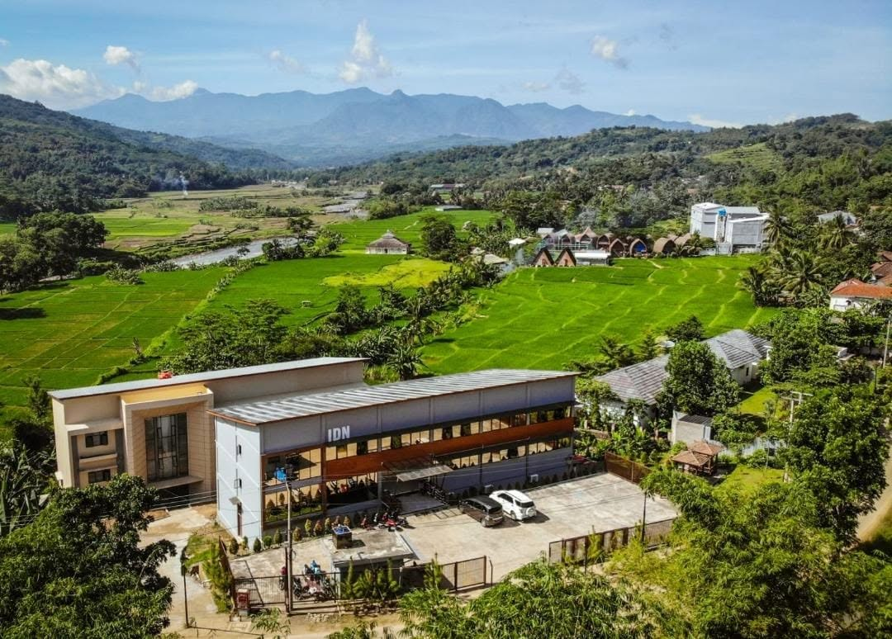

Tentang IDN

Politeknik IDN Bogor resmi berdiri pada tanggal 26 Juli 2022 setelah diterbitkannya Keputusan Menteri Pendidikan, Kebudayaan, Riset, dan Teknologi Nomor 213/D/OT/2022. Lembaga pendidikan tinggi swasta yang berlokasi di Desa Sukanegara, Kecamatan Jonggol, Kabupaten Bogor, Jawa Barat ini diselenggarakan oleh Yayasan IDN (Islamic Development Network).
Langkah pendirian politeknik ini diinisiasi oleh pendiri sekaligus pembina yayasan, Bapak Dedi Gunawan, MT, CCIE, sebagai bentuk ekspansi strategis dari ekosistem pendidikan IDN. Sebelumnya, sejak mulai mengajar pada tahun 2016 dan disahkan secara hukum pada 2018, Yayasan IDN telah berpengalaman luas dan dikenal sukses dalam mengelola berbagai institusi pendidikan Islam berbasis teknologi informasi (IT), mulai dari tingkat dasar,pesantren tahfidz, hingga sekolah menengah kejuruan (SMK IDN).